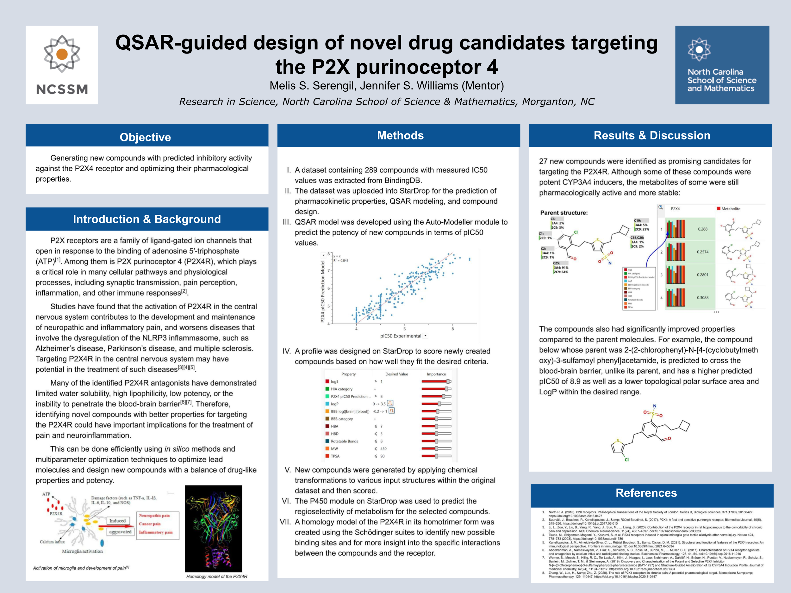

Title:
QSAR-guided Design of Novel Drug Candidates Targeting the P2X4 Receptor
Abstract:
P2X purinoreceptor 4 (P2X4R) plays pivotal roles in many diverse
physiological processes, and its dysregulation has been shown to be involved in neuropathic pain, depression,
neuroinflammatory diseases, and various other conditions. Although several P2X4R-blocking compounds have been developed,
factors such as limited water solubility and bioavailability hinder their clinical relevance. This study focuses on the
identification of selective P2X4R antagonists with therapeutic potential for diseases and conditions related to the
activation of P2X4R. Quantitative structure-activity relationship (QSAR) analyses based on known lead compounds were
utilized to identify novel P2X4R antagonists with optimized drug-like properties, and computational models were used to
predict the absorption, distribution, metabolism, and excretion (ADME) properties of the potential compounds.
Furthermore, a homology model of the P2X4R in its homotrimer form was created, and molecular docking studies were
performed to elucidate the interactions between the designed molecules and the binding sites on P2X4R. Through these
methods, new compounds have been identified as promising candidates for targeting the P2X4R.
Introduction:
P2X receptors are a family of ligand-gated ion channels that open in response to the binding of adenosine 5′-triphosphate
(ATP). Seven separate genes coding for P2X subunits have been identified in mammals so far, each with its own distribution
patterns and in the body (North, 2016). Among them is P2X purinoreceptor 4 (P2X4R). Expressed in most of the tissues in the
body, P2X4R plays a critical role in many cellular pathways and physiological processes, including synaptic transmission,
pain perception, inflammation, and other immune responses (Suurväli et al., 2017). In the central nervous system, P2X4R is
primarily expressed in glial cells, especially microglia, as well as in neurons (Zabala et al., 2018).
There is significant evidence pointing out that the activation of P2X4R in the central nervous system contributes to the development and maintenance of neuropathic and inflammatory pain. In a study by Li et al. (2020), depressive-like behaviors and neuropathic pain were induced in rats by chronic constriction injury (CCI) to the sciatic nerve and the unpredictable chronic mild stress (UCMS) protocol. These changes resulted in the overexpression of P2X4, NLRP3 inflammasome, and interleukin-1β in the hippocampus. It was also discovered that a P2X4R antagonist molecule (5-BDBD) could lessen neuronal damage in the hippocampus and relieve pain and depressive behaviors when administered to the treated rats. Another study done by Tsuda et al. (2003) established that the activation of spinal P2X4 receptors in microglia is necessary for the development of tactile allodynia post-nerve injury in rats, which is a type of neuropathic pain characterized by painful hypersensitivity to the stimulation of the skin such as touch or even temperature changes, and the antisense oligonucleotide to P2X4 gene helped alleviate the pain. These results suggest that targeting P2X4R in the central nervous system may have potential in the treatment of neuropathic pain and depression.
Several other studies have also found that the activation of P2X4R can worsen diseases that involve the dysregulation of the NLRP3 inflammasome, such as Alzheimer’s disease, Parkinson’s disease, and multiple sclerosis by leading to increased secretion of IL-1β and other major proinflammatory cytokines and leading to neuronal death (Kanellopoulos et al., 2021). An increase in the expression of P2X4R in rodent neurons is known to enhance amyloid beta toxicity, while the downregulation of P2X4 decreases neuronal death induced by amyloid beta fragments (Varma et al., 2009). Increased surface P2X4R also contributes to synaptic dysfunctions as well as alterations in synaptic plasticity, memory, and anxiety (Bertin et al. 2021). The modulation of P2X4R is also thought to be involved in many other pathologies, including epilepsy, ischemia, and psychiatric disorders such as alcohol use disorders (Montilla et al. 2020).
It is, therefore, very important to identify selective P2X4R antagonists with high potency, no species-restricted effect, and drug-like properties in search of a compound with a therapeutic effect for different pathologies mentioned previously. A number of potent P2X4R-blocking compounds have been developed as potential treatments. These P2X4R antagonists typically bind to an allosteric site on the receptor and disrupt a network of amino acids, including Asp-85, Ala-87, Asp-88, and Ala-297, which are important for transmitting the conformational change in the structure after the binding of ATP (Pasqualetto et al., 2023). As a result, the binding of these antagonistic compounds can effectively prevent the creation of a response as a result of ligand binding. However, many of these compounds have issues that prevent them from being effective and useful as drugs for humans. Several of the identified P2X4 antagonists showed limited water solubility, such as 5-BDBD mentioned previously, PSB-12054, and BX430 (Abdelrahman et al., 2017). PSB-12054 also showed high lipophilicity, which is a drawback for an orally administered drug. Then, Werner et al. (2019) presented the compound BAY-1797, which had high water solubility but could not penetrate the blood-brain barrier.
Successful drugs require a balance of many factors related to their biological and physicochemical properties, and achieving a good combination of these drug-like properties and potency is a major hurdle of the drug discovery process. However, numerous in silico methods have been developed to predict the absorption, distribution, metabolism, and excretion (ADME) properties of the compounds as well as their potency, toxicity, and selectivity against the molecular targets or off-targets. Moreover, several multiparameter optimization techniques have been developed to deal with the complex data on the behavior of compounds, and it is possible to optimize already existing lead molecules and design new compounds with a balance of drug-like properties and potency (Seagall, 2012). The aim of this study is to discover novel P2X4R antagonists for using in silico methods for ADME quantitative structure-activity relationship (QSAR) and molecular docking.
Research Poster:

Research Presentation:
Methods (Detailed):
- Compilation of Data for QSAR and the Representation of Chemical Compounds: A dataset containing 289 compounds with measured IC50 values was extracted as a TSV file from BindingDB - a publicly available database containing measured binding affinities of ligands to their targets. All columns except for the SMILES string and the PubChem CID of the compounds were removed. The dataset (see appendix) was then uploaded into StarDrop. SMILES strings were used as inputs for chemical property calculations, QSAR modeling, compound design, and structure visualization.
- QSAR Modeling: The experimentally determined IC50 values were converted to pIC50 using the Mathematical Function Editor in StarDrop to linearize and reduce the skewness of the data and make the model easier to evaluate with standard techniques. Then, a quantitative structure-activity relationship (QSAR) model was developed using the Auto-Modeller module to predict the potency of new compounds in terms of pIC50 values. The first step in building the model was the selection of molecular descriptors, which allow the mathematical analysis of molecules by transforming information contained within the molecular structures into numbers. The built-in library of whole-molecule and 2D molecular descriptors (see appendix for the list of specific descriptors) was filtered by excluding descriptors with low variance (SD < 0.0005), low occurrence (<4% compounds), or high correlation (>0.95). This was done because these descriptors provided minimal information on the differences between molecules in the dataset.
- Creating a Probabilistic Scoring Profile: A profile was designed on StarDrop to score newly created compounds based on how well they fit the desired criteria. The relevant properties and the desired values were selected using the paper published by Pajouhesh et al. (2005) and other literature as guidelines. The scoring profile was applied to the original dataset and newly generated compounds to make it easier to visualize which compounds had the highest chance of success.
- Virtual Design of Ligands: New compounds were generated in the Nova module of StarDrop by applying chemical transformations to various input structures within the original dataset (see appendix for the full list of transformations applied). 5 subsequent generations were created this way from each selected input structure, and the best 100 compounds from each generation were selected to act as the parent molecules for the next generation. Input structures were chosen based on their overall score and diversity. Output structures with undesirable fragments were then removed (see appendix for SMARTS patterns searched when removing undesirable compounds).
- Filtering of Compounds: Newly generated compounds were then filtered based on Glaxo Wellcome’s criteria. The built-in Glaxo Wellcome filters in StarDrop for reactive groups (carbazides, sulfonates, etc) and undesirable leads (containing crown ethers, thiols, etc) were applied to the dataset containing newly generated compounds. In addition to those filters, a module was uploaded to StarDrop for the count of Pan-assay interference compounds (PAINS). This module was used to identify compounds in our dataset that could potentially behave as PAINS. These compounds are known for their tendency to interact non-specifically with a wide range of biological targets, which can introduce background noise in compound analysis.
- Prediction of Drug Metabolism: The P450 module on StarDrop was used to predict the regioselectivity of metabolism for the selected compounds by the major drug metabolizing Cytochrome P450 enzymes. The Cytochrome P450 isoforms analyzed by the software were CYP3A4, CYP2D6, CYP2C9, CYP1A2, CYP2C19, CYP2C8, and CYP2E1. In order words, the sites at which metabolic reactions are most likely to occur were identified, as well as the metabolites produced during metabolism if the compound is a substrate of the drug-metabolizing enzymes.
- Homology Modeling: The target sequence was retrieved from the UniProt database (accession number: Q99571-1). Among the three different isoforms of the P2X4 purinoreceptor produced as a result of alternative splicing, the 388 amino acid long canonical sequence was selected as the target sequence. To find a suitable template structure with a homologous sequence to the P2X4 receptor, the Protein Data Bank (PDB) was searched, and the crystal structure of the ATP-gated P2X4 ion channel belonging to the organism Danio rerio in the closed, apo state at 3.5 Angstroms (PDB ID: 3I5D) was chosen as the template. The selection was based on sequence identity, structural similarity, and overall quality of the template structures. Afterward, sequence alignment was performed using the alignment tool within the Schrödinger suite Maestro. This step ensured the alignment of the P2X4 receptor sequence with the chosen template in a manner that preserved the conserved regions and the structural motifs. The homology model of the P2X4 receptor was generated using the homomultimer model since the P2X4 receptor is a trimer made up of three highly similar or identical subunits. The aligned sequence information was then used to predict the 3D structure of the target protein using energy-based modeling and taking into account the structural information from the selected template.
- Assessing Model Quality and Model Refinement: After constructing the homology model, its quality was assessed in order to determine and fix any problems associated with the structure, such as steric clashes and bond length deviations. This was done by generating a Ramachandran plot and a protein quality report using the protein reports panel in Maestro for the model. The generated model was then subjected to energy minimization using Schrödinger's molecular mechanics force fields to relieve steric clashes and optimize the geometry.
Afterward, the dataset was split into three sets: training, validation, and test. The clustering algorithm developed by Butina (1999) was utilized instead of random sampling due to the relatively small size of the dataset to ensure that the sets are representative and balanced in terms of structural similarity and chemical properties. The similarity of each molecule to all the other molecules in the dataset was calculated (a Tanimoto coefficient of 0.7 was used to determine the similarity between the compounds). Similar molecules (similarity above the specified threshold) were clustered together, and the cluster centers and any unclustered data points were assigned to the training set. The remaining data in each cluster was then split between the training, validation, and test sets (70% in the training set, 15% in both validation and test sets). After splitting the dataset, the molecular descriptors were filtered again, and modeling techniques were applied to generate QSAR models. The following methods were selected to generate the models on StarDrop: partial least squares (PLS), simple radial basis function (RBF), Gaussian processes: fixed, Gaussian processes: 2D search, Random forest regression, RBF neural network algorithm based on genetic algorithm, Gaussian processes: forward variable selection, Gaussian processes: rescaled forward variable selection, Gaussian processes: optimized, Gaussian processes: nested sampling. The model with the highest correlation value was selected and incorporated into the project.
References:
Abdelrahman, A., Namasivayam, V., Hinz, S., et al. (2017).
Characterization of P2X4 receptor agonists and antagonists by calcium influx and radioligand binding studies.
Biochemical Pharmacology, 125, 41–54. doi:10.1016/j.bcp.2016.11.016
Kanellopoulos, J. M., Almeida-da-Silva, C. L., Rüütel Boudinot, et al. (2021). Structural and
functional features of the P2X4 receptor: An immunological perspective. Frontiers in Immunology,
12. doi:10.3389/fimmu.2021.645834
Kawate, T., Michel, J. C., Birdsong, et al. (2009). Crystal structure of the ATP-gated P2X(4)
ion channel in the closed state. Nature, 460(7255), 592–598. https://doi.org/10.1038/nature08198
Li, L., Zou, Y., Liu, B., et al. (2020). Contribution of the P2X4
receptor in rat hippocampus to the comorbidity of chronic pain and depression. ACS Chemical Neuroscience,
11(24), 4387–4397. doi:10.1021/acschemneuro.0c00623
Montilla, A., Mata, G. P., Matute, et al. (2020). Contribution of P2X4 Receptors to
CNS Function and Pathophysiology. International journal of molecular sciences, 21(15), 5562.
https://doi.org/10.3390/ijms21155562
North R. A. (2016). P2X receptors. Philosophical transactions of the Royal Society of London.
Series B, Biological sciences, 371(1700), 20150427. https://doi.org/10.1098/rstb.2015.0427
Pasqualetto, G., Zuanon, M., Brancale, A., et al. (2023). Identification of the molecular
determinants of antagonist potency in the allosteric binding pocket of human P2X4. Frontiers in pharmacology,
14, 1101023. https://doi.org/10.3389/fphar.2023.1101023
Pajouhesh, H., & Lenz, G. R. (2005). Medicinal chemical properties of successful central nervous system drugs.
NeuroRx: the journal of the American Society for Experimental NeuroTherapeutics, 2(4), 541–553.
https://doi.org/10.1602/neurorx.2.4.541
Segall M. D. (2012). Multi-parameter optimization: identifying high quality compounds with a balance of properties.
Current pharmaceutical design, 18(9), 1292–1310. https://doi.org/10.2174/138161212799436430
Sophocleous, R. A., Ooi, L., & Sluyter, R. (2022). The P2X4 Receptor: Cellular and Molecular Characteristics of a
Promising Neuroinflammatory Target. International journal of molecular sciences, 23(10), 5739.
https://doi.org/10.3390/ijms23105739
Suurväli, J., Boudinot, P., Kanellopoulos, J., et al. (2017). P2X4: A fast and sensitive
purinergic receptor. Biomedical Journal, 40(5), 245–256. https://doi.org/10.1016/j.bj.2017.06.010
Tsuda, M., Shigemoto-Mogami, Y., Koizumi, S. et al. (2013) P2X4 receptors induced in spinal microglia gate tactile
allodynia after nerve injury. Nature 424, 778–783 https://doi.org/10.1038/nature01786
Varma, R., Chai, Y., Troncoso, J. et al. Amyloid-β Induces a Caspase-mediated Cleavage of P2X4 to Promote
Purinotoxicity. Neuromol Med 11, 63–75 (2009). https://doi.org/10.1007/s12017-009-8073-2
Werner, S., Mesch, S., Hillig, R. (2019). Discovery and Characterization of the Potent and Selective P2X4
Inhibitor N-[4-(3-Chlorophenoxy)-3-sulfamoylphenyl]-2-phenylacetamide (BAY-1797) and Structure-Guided
Amelioration of Its CYP3A4 Induction Profile. Journal of medicinal chemistry, 62(24), 11194–11217.
https://doi.org/10.1021/acs.jmedchem.9b01304
Zabala, A., Vazquez‐Villoldo, N., Rissiek, et al. (2018).P2X4 receptor controls microglia activation and favors remyelination
in autoimmune encephalitis. EMBO Molecular Medicine, 10(8). https://doi.org/10.15252/emmm.201708743